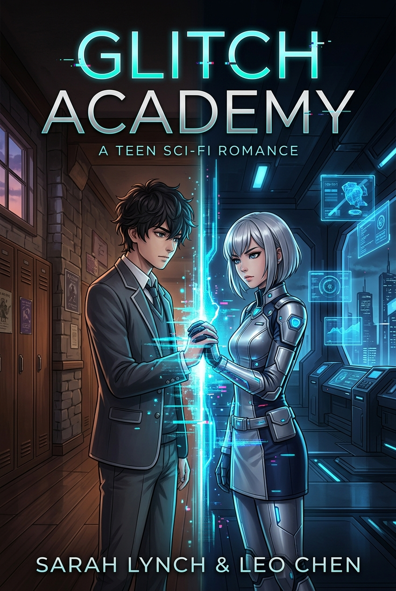

선택의 서가
내 서재
당신의 선택이, 오래 남은 이야기가 됩니다.
MY COLLECTION
내가 만든 이야기
0%0 / 21 결말
- 0
- 읽은 이야기
- 0
- 내 선택
- 0
- 수집한 결말
RETURN TO STORY
이어 읽기

THE COLLECTION
이야기 고르기
마음에 남는 표지에서 시작해도 좋습니다.
01

심리극 · 로맨스 미스터리
유리 계절의 고백
돌아온 첫사랑, 사라진 작가, 그리고 끝내 고치지 못한 한 문장.
02

심리 미스터리
빛이 닿지 않은 사진
사라짐을 연출하려던 여자가 남긴 사진과, 실제로 사라진 시간.
03

휴먼 미스터리 · 느린 로맨스
마지막 편지를 대신 쓰는 일
세 통의 편지가 열세 해 전 화재와, 오늘 전할 문장을 다시 연다.
04

학원 SF · 이세계 로맨스
글리치 아카데미
백만 년 뒤 미래형 사관학교와 현대의 교실을 오가는 차원 연동형 연애 오작동.
05
청소년 로맨스
오후 5시 17분의 우리
폐지를 앞둔 교내 방송과 익명의 답장 사이에서, 열일곱의 마음이 자기 목소리를 찾는다.
ENDING ARCHIVE
내가 닿은 결말
한 번 도달한 결말은 처음부터 다시 읽어도 이곳에 남습니다.